Cypress is known as an End-To-End test runner, but it can happily run component, unit, and even API tests. I have projects that use Cypress just for API testing. It works pretty nicely: rich set of commands and assertions, good user interface, easy to run on CI. Using plugins like @bahmutov/cy-api and cypress-plugin-api you can even give API tests nice graphical interface inside the browser.
In this blog post I will give examples of Cypress api tests using the use-cypress-for-api-testing application as my example. The application is a simple TodoMVC web application on top of REST API. There are endpoints to create, delete, and modify Todo items, plus an endpoint to reset the data:
GET /todosreturns all todo itemsPOST /todosadds a new todo itemPATCH /todos/:idupdates the given todo itemDELETE /todos/:iddeletes on todo itemPOST /resetreplaces the entire backend data with the given object
Let's write a few API tests.
Table of Contents
- Adding new todos
- Update an item
- Delete an item
- Show more data during assertions
- Show the full request and response
- Complex data assertions
- Async mode
- Run tests on CI
- Loop through data
- Produce detailed report
- Combine API and Web testing
- Final thoughts
- See also
Adding new todos
Let's write a simple API test that resets all todos, adds a todo, then fetches all items. We will use the core Cypress command cy.request to make all HTTP calls
1 | describe('TodoMVC API', () => { |
The test passes. There is nothing to render in the Cypress application frame on the right, since we never did cy.visit in the test. Still, the Command Log on the left shows every API test command.
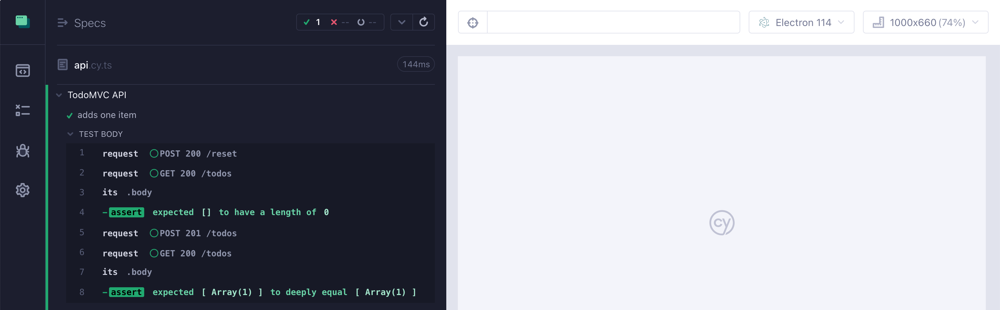
If we are using the Cypress interactive mode cypress open we can click on the REQUEST command to see the request and the response. For example, let's examine the cy.request('POST', '/todos', todo) command
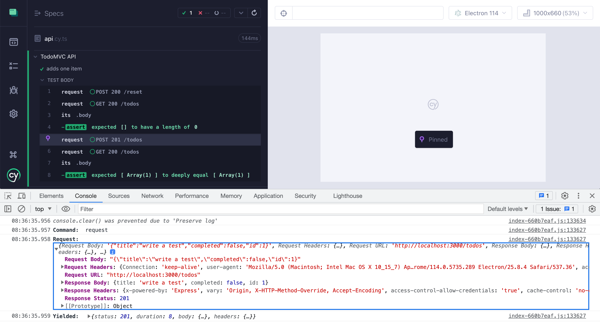
When using the interactive cypress open mode you can inspect each call by clicking on the command.
Update an item
Once we know our backend API supports adding and fetching new items, let's confirm that we can complete an item.
1 | describe('TodoMVC API', () => { |
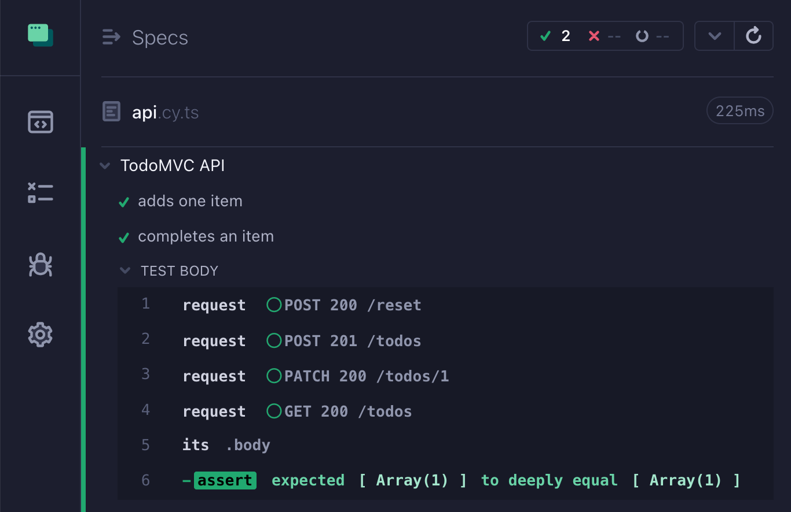
Delete an item
Let's confirm that we can delete an item using an API call. We can take a shortcut and set the backend data using POST /reset instead of creating individual items via POST /todos. We know that adding items is working from the first test.
1 | describe('TodoMVC API', () => { |
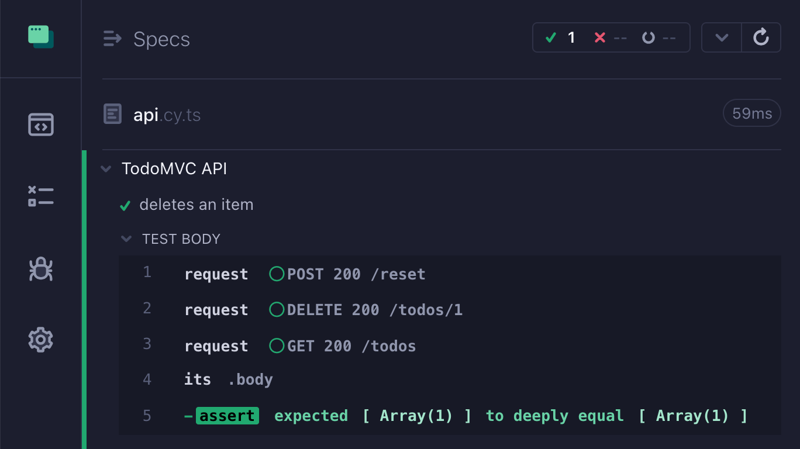
Show more data during assertions
In our tests we used the built-in Chai assertions like deep.equal. By default, these assertions truncate the data shown in the Command Log. Let's increase the truncation threshold to see more information.
1 | // show more information in each assertion |
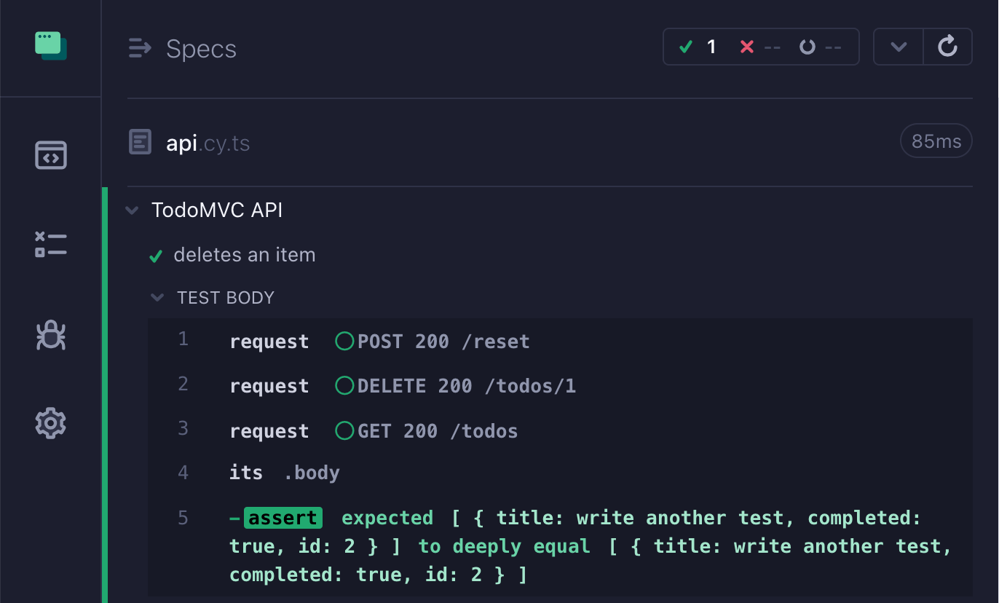
Show the full request and response
Since we have an empty web application frame on the right and want to see more information for each request, let's redirect the request / response to the frame. I will use the cypress-plugin-api plugin to give my API tests a nice UI.
1 | // https://github.com/filiphric/cypress-plugin-api |
We simply imported the plugin and used cy.api instead of cy.request to make the calls. The Cypress UI is now much nicer.
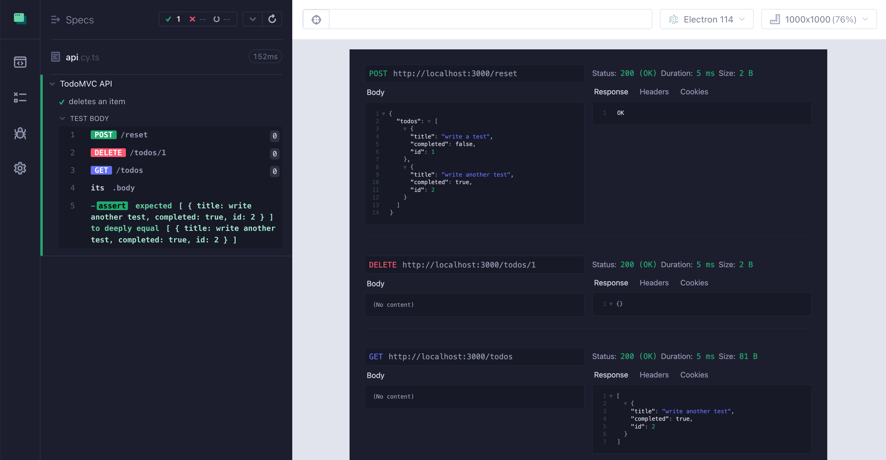
We can even combine cy.request and cy.api to only show the relevant test information. For example, we might not want to see the POST /reset calls while being interested in the other calls in the test:
1 | it('completes an item', () => { |
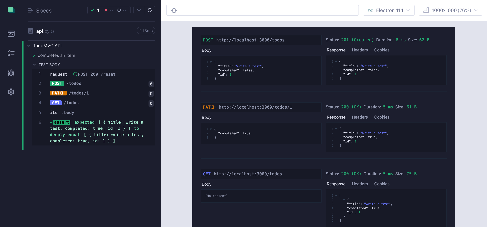
Complex data assertions
When creating a new item using POST /todos call, the app sends the item, and the server responds with the same item. If the sent item does not include the id property, the server will assign one. The server signals the success by returning status code 201. Let's confirm this.
1 | it('gets an id from the server', () => { |
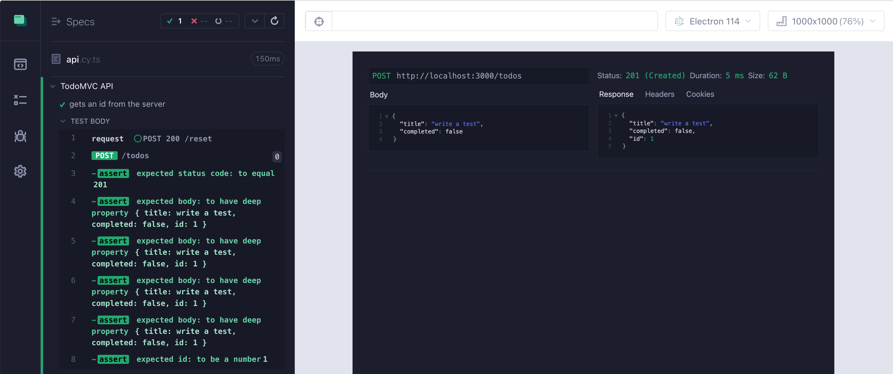
The test is becoming verbose, and the Command Log is getting noisy. Let's use cy-spok plugin to make our assertions more powerful.
1 | // https://github.com/filiphric/cypress-plugin-api |
Using a single cy-spok assertion we can match complex objects with nested properties and predicate checks.
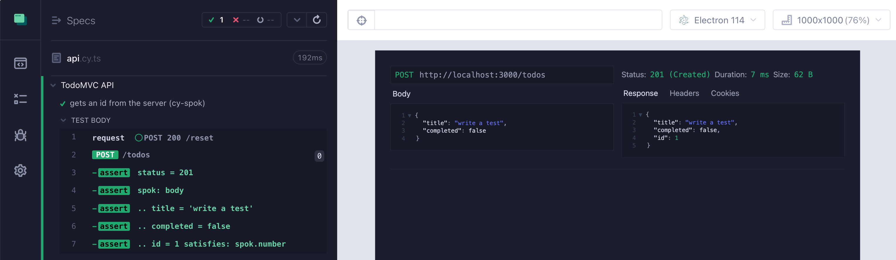
Async mode
Often API tests get something from the server and use that piece of data to make new calls. For example, if we want to get the ID of the created item to delete it, we could write the following test
1 | it('deletes the created item using its id', () => { |
Anytime the test gets something from the application, it needs to pass it forward to the cy.then(callback) or to the next assertion. Some people are intimidated by such coding style; they miss async / await syntax. For them I wrote cypress-await plugin that allows you to use the await syntax with the Cypress command chains. Here is how we can rewrite the above test:
1 | // https://github.com/filiphric/cypress-plugin-api |
The test works the same, but it might be more intuitive to read.
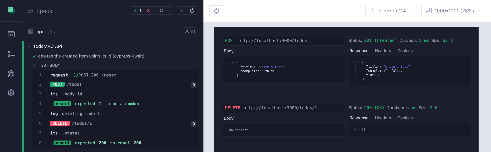
Bonus: cypress-await plugin includes a sync mode which allows you to drop the verbose await in front of every cy command. The test runs the same and becomes simply:
1 | // sync mode from cypress-await |
Run tests on CI
We want to run API tests on CI from day one. Let's use GitHub Actions. We can use cypress-io/github-action to manage dependencies, caching, and running Cypress for us:
1 | name: ci |
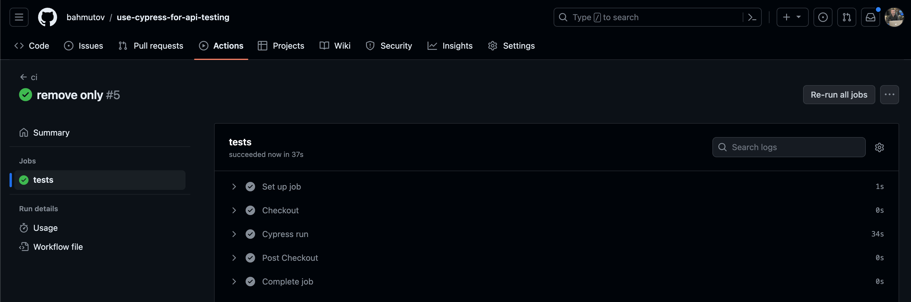
Beautiful. Want even more power? Learn how to run tests in parallel using GitHub Actions in this video. In general, Cypress API tests running in the browser are slower than an equivalent Node-only API tests. But the debugging is faster, and on CI I can parallelize the tests using a one minute change; see cypress-split and cypress-workflows.
Loop through data
Because Cypress queues up its commands, it is easy to iterate over collections. For example, let's see how we can delete each item one by one
1 | // https://github.com/filiphric/cypress-plugin-api |
The expression to delete each Todo item simply queues up 4 Cypress commands:
1 | // delete each item one by one |
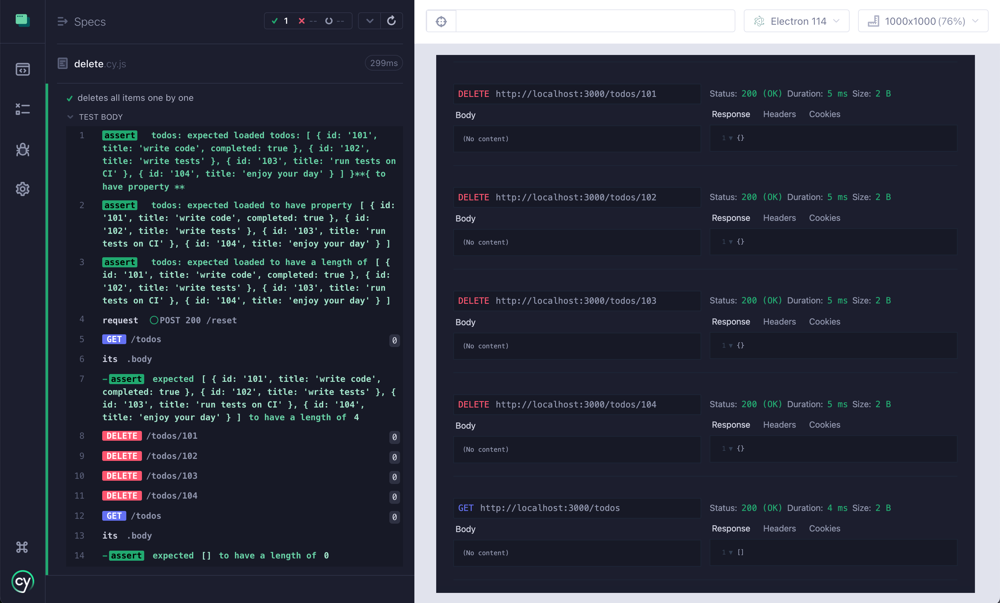
Produce detailed report
Since API tests do not use the browser to show the web page, there is less information to go on when the test fails. We can produce detailed terminal log (stdout and even JSON) using the plugin cypress-terminal-report. Here is an example terminal report output for the above "deletes all items one by one" test produced.
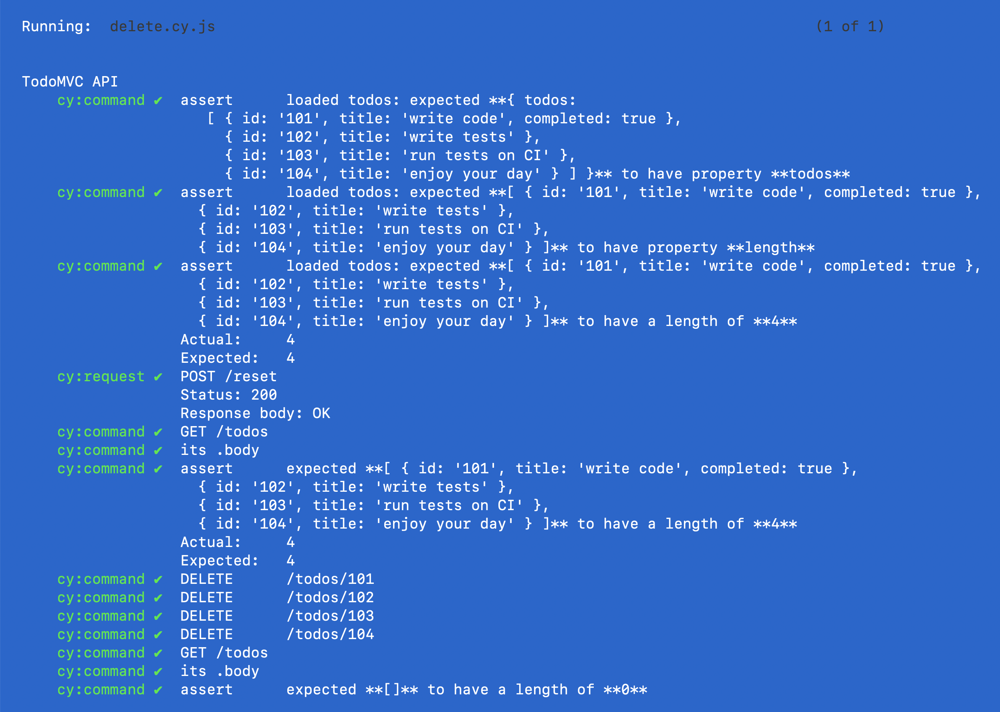
Combine API and Web testing
Finally, a nice feature of Cypress API tests is how easy it is to combine them with the UI web tests. Let's see one such example. The example application reloads all todos every minute:
1 | // how would you test the periodic loading of todos? |
Let's write a test that quickly tests this feature. We will create the initial data using API calls, then visit the site and confirm the initial list is visible. Then we can delete an item using an API call, fast-forward the app clock by 1 minute, and confirm the web view has updated and shows N - 1 todos.
1 | // show more information in each assertion |
I am using cy.clock and cy.tick commands to control the web application's clock. In between, we are deleting the data using the cy.request('DELETE', '/todos/101') command.
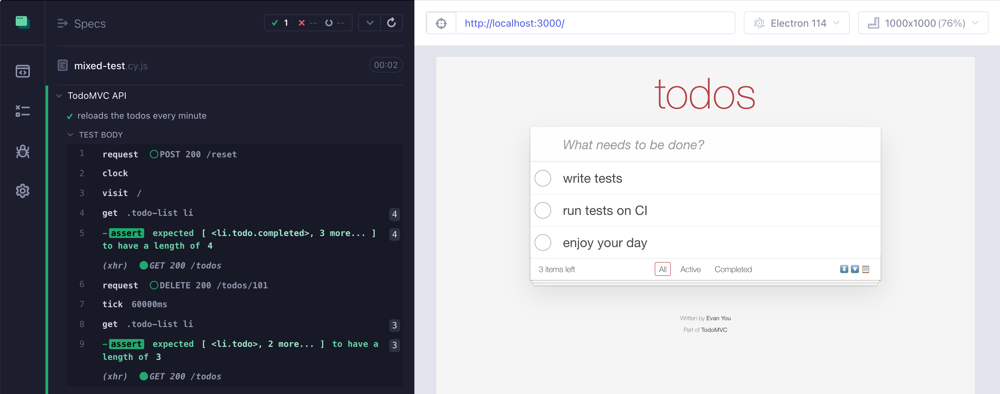
For more clock examples, see Spies, Stubs & Clocks.
Final thoughts
Cypress can be a powerful API testing tool. It has good API, assertions, and a visual interactive test runner great for seeing the test run. It also can be extended using open source plugins to provide even better API testing experience.
See also
- 🎓 Course Cypress Plugins has lessons covering
cy-api,cy-spok,cypress-plugin-api, and lots of other plugins - 🎓 Course Cypress Network Testing Exercises teaches advanced network testing through hands-on exercises
- You Should Test More Using APIs
- Change E2E Tests From UI To API To App Actions
- Black box API testing with server logs
- How to write end-to-end test using app and api actions